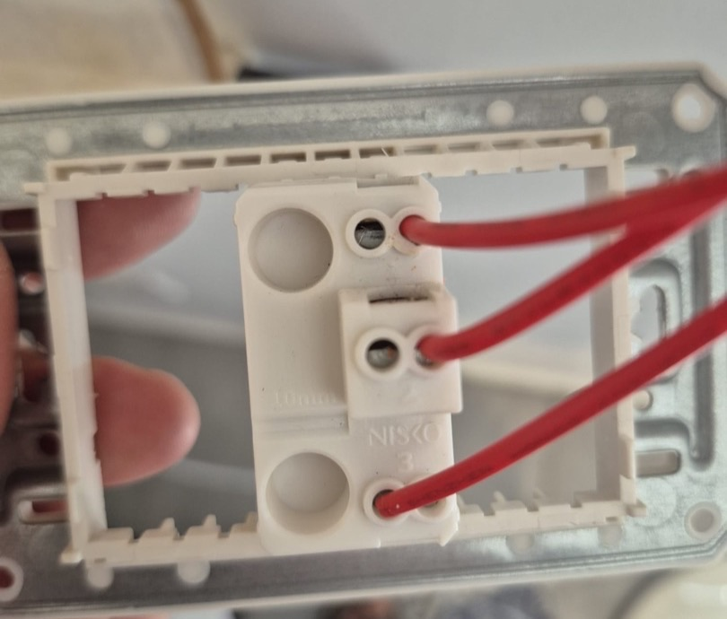

Come ho reso smart la mia tapparella con un SONOFF MINI-ZBRBS
La tapparella del mio ufficio ha un motore elettrico e un normale interruttore su/giù a muro. Ho messo un SONOFF MINI-ZBRBS, un piccolo modulo Zigbee per tapparelle, nella scatola a incasso dietro quell'interruttore. L'interruttore a muro funziona esattamente come prima, e ora la tapparella si apre e si chiude anche da un riquadro in ZigDash, a casa e da ovunque.
Come funziona
Il motore di una tapparella ha due fili di alimentazione: uno la fa salire, l'altro scendere. L'interruttore a muro manda la fase a uno dei due. Il MINI-ZBRBS si mette in mezzo: i due fili del motore vanno alle sue uscite (Lout1 e Lout2), e il vecchio interruttore va ai suoi ingressi (S1 e S2). Quando premi l'interruttore, il modulo aziona il motore. Quando ZigDash lo chiede via Zigbee, aziona il motore anche lui.
Il modulo sa anche dove si trova la tapparella, quindi puoi mandarla al 50% invece che solo tutta su o tutta giù. E dato che è alimentato da rete, funziona come router Zigbee e rende la tua rete più forte.
Cosa ti serve
- Un SONOFF MINI-ZBRBS (interruttore Zigbee per tapparelle). Zigbee2MQTT lo supporta come modello
MINI-ZBRBS. - Un motore per tapparelle con i suoi finecorsa: il solito motore tubolare a quattro fili (neutro, su, giù, terra) che si ferma da solo in alto e in basso. SONOFF dichiara il modulo per motori fino a 1 A, e il modulo ferma il motore da solo dopo 2 minuti nella stessa direzione.
- Un filo di neutro nella scatola dell'interruttore. Il modulo ha bisogno del neutro per alimentarsi.
- Spazio nella scatola dietro l'interruttore. SONOFF consiglia una scatola profonda almeno 60 mm.
- Morsetti a leva (io ho usato un WAGO 221) e qualche spezzone di filo.
- Un hub Zigbee2MQTT a casa. Se non ne hai ancora uno, vedi Hub.
- ZigDash sul telefono (Google Play). Comandare la tapparella da casa è gratis. Comandarla da ovunque usa il controllo remoto di ZigDash Pro: un acquisto una tantum, senza abbonamento.
1. Cablare il modulo
Il modulo ha sei morsetti, stampati sopra: N, L, Lout1, Lout2, S1 (su) e S2 (giù). Non ha un morsetto di terra. Ecco come ho cablato il mio:
| Morsetto | Va a | Nella mia scatola |
|---|---|---|
| N | Neutro | I fili blu di neutro, uniti in un WAGO 221, con un filo corto da lì a N (vedi la nota sotto sul suo colore) |
| L | Fase | La fase che alimenta la scatola |
| Lout1 | Motore: su (SONOFF lo chiama «forward») | Il filo nero del motore |
| Lout2 | Motore: giù («reverse») | Il filo marrone del motore |
| S1 | L'uscita su dell'interruttore | Una delle uscite del vecchio interruttore |
| S2 | L'uscita giù dell'interruttore | L'altra uscita del vecchio interruttore |
Il vecchio interruttore resta. Il suo morsetto comune riceve la fase, come prima. Le sue due uscite non vanno più al motore: vanno a S1 e S2, e dicono al modulo in che direzione muovere. S1 e S2 sono ingressi a tensione di rete, non a bassa tensione: alimenta il comune dell'interruttore dalla stessa fase, sullo stesso interruttore automatico, di L.
Terra: lascia la terra giallo-verde del motore collegata alla terra della scatola, com'era. Non va al modulo.
Su e giù: i colori dei fili sono diversi in ogni casa. Prima di scollegare l'interruttore, annota quale filo del motore era alimentato dalla sua uscita su, e segnalo: quello va a Lout1. Se li inverti, il passo 4 spiega come rimediare.



Controlla che ogni morsetto a vite sia ben stretto. Per ora lascia il modulo fuori dalla scatola, con i morsetti rivolti dalla parte opposta alla tua: lo abbinerai nel passo successivo.
2. Abbinarlo a ZigDash
Per l'abbinamento il modulo deve essere alimentato e bisogna premere il suo pulsante, quindi è l'unico momento in cui lavori vicino a una scatola sotto tensione. Premi solo il pulsante, con un attrezzo di plastica (il retro di una penna), e non toccare nient'altro. Appoggia il modulo su qualcosa che non conduce, senza che tocchi il telaio metallico dell'interruttore.
- In ZigDash, apri Dispositivi e tocca Avvia abbinamento.
- Riattiva l'interruttore automatico. Tieni premuto il pulsante del modulo per circa 5 secondi, finché il suo LED blu lampeggia lentamente. Resta in modalità abbinamento fino a 3 minuti.
- ZigDash mostra il nuovo dispositivo. Dagli un nome che riconoscerai, come Tapparella ufficio.
- Spegni l'interruttore automatico. Ripiega i fili, metti il modulo dietro l'interruttore, chiudi la scatola e riattiva l'interruttore automatico. Tutto il resto si fa dal telefono e dalla pagina web di Zigbee2MQTT.
3. Dirgli che tipo di interruttore hai
Il modulo deve sapere come si comporta il tuo interruttore a muro:
- Un interruttore a bilanciere che resta su, spento o giù (come il mio): modalità
edge. - Un pulsante che torna indietro quando lo lasci: modalità
pulse.
Il modo più semplice è la pagina web di Zigbee2MQTT: apri il dispositivo, vai alla sua scheda Exposes e imposta external_trigger_mode su edge o pulse. (Può farlo anche il pulsante del modulo: una tripla pressione rapida passa al tipo di interruttore successivo e il LED lampeggia tre volte; potrebbe essere necessario ripeterla. Questo vuol dire riaprire la scatola, quindi io ho usato Zigbee2MQTT.)
Poi porta l'interruttore a muro su, spento e giù: la tapparella dovrebbe muoversi e fermarsi come ha sempre fatto. Se non lo fa, la modalità è sbagliata; imposta l'altra.
4. Calibrare
Il modulo impara quanto tempo impiega la tapparella a salire e scendere del tutto. Senza questo, può aprire e chiudere, ma non può andare a una posizione come il 50%.
- Nella pagina web di Zigbee2MQTT, nella scheda Exposes del dispositivo, imposta
motor_travel_calibration_actionsustart_automatic. - Lascialo andare: la tapparella va fino in fondo in una direzione, poi nell'altra. Non toccare l'interruttore mentre lo fa. Quando ha finito,
motor_travel_calibration_statusmostraCalibrated.
(Sul modulo stesso, tenere premuto il pulsante per più di 10 secondi, finché il LED «respira», avvia la stessa calibrazione.) Se la calibrazione automatica non finisce (con un motore debole, per esempio), sia SONOFF sia Zigbee2MQTT descrivono una calibrazione manuale: segni tu le posizioni tutta aperta e tutta chiusa.
Su e giù invertiti? Spegni l'interruttore automatico, scambia i fili su Lout1 e Lout2, poi calibra di nuovo. L'opzione invert_cover di Zigbee2MQTT inverte solo la posizione che riporta; non cambia il verso in cui gira il motore.
5. Un riquadro tapparella in ZigDash
- Sulla tua dashboard, tocca Aggiungi da un dispositivo e scegli la tapparella.
- Il riquadro ha i pulsanti Apri, Stop e Chiudi, e una fila di posizioni preimpostate (0, 25, 50, 100 di default). Puoi attivare un cursore di posizione nelle impostazioni del riquadro.
- Da ovunque: con ZigDash Pro, attiva il controllo remoto e lo stesso riquadro funziona anche fuori casa, senza aprire porte sul router e senza canone mensile.
L'interruttore a muro e l'app funzionano fianco a fianco: l'interruttore c'è ancora per chi non ha l'app, e il riquadro continua a funzionare sia che la tapparella sia stata mossa l'ultima volta a mano sia dal telefono.